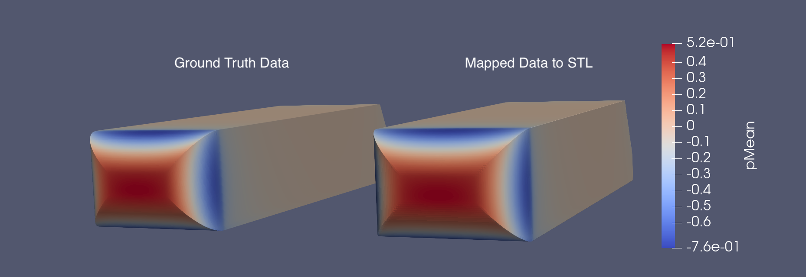
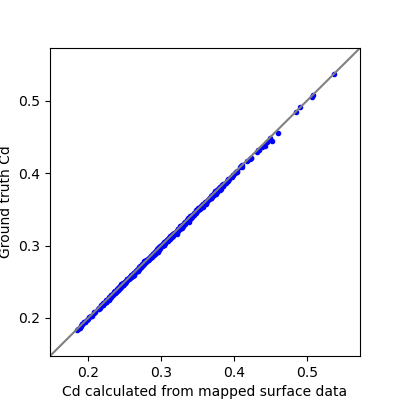
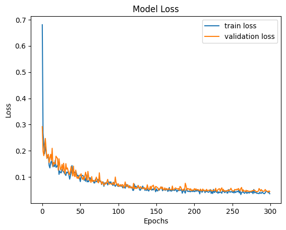
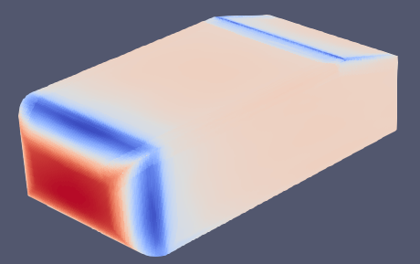

2. Training Surface Variable Prediction on the AhmedML Dataset¶
This section guides you through the steps to train a surface variable prediction model on the AhmedML Dataset. If you haven’t already accessed the AhmedML dataset, follow these instructions.
The surface variable prediction pipeline consists of the following main steps:
Create the manifest
Preprocess the geometries and surface variable values for training and testing
Train the surface variable prediction model
Test the trained model on a test dataset
Before we begin, navigate to the tutorials/surface/ahmed folder, which contains the necessary scripts and configuration files for this tutorial:
tutorials/surface/ahmed/
├── download-dataset
├── logging.yaml
├── prediction.yaml
├── readme.txt
├── run-clean
├── run-create-manifest-prediction
├── run-create-manifest-training
├── run-prediction
├── run-training-pipeline
└── training.yaml
download-dataset: Script to help download the dataset from S3logging.yaml: Configuration file for logging settings.training.yaml: Configuration file for the training and testing pipeline.prediction.yaml: Configuration file for prediction on new geometries.run-create-manifest-training: Script to create the training and testing data manifest.run-create-manifest-prediction: Script to create the new geometry prediction data manifest.run-training: Script to run the entire training and testing pipeline.run-prediction: Script to run the prediction step on new geometries.readme.txt: Additional instructions and information about the tutorial.
The process involves creating the data manifest, understanding the configuration file, running the training and testing pipeline, and reviewing the results.
Let’s go through each step in detail.
2.1. Creating the Manifest¶
A manifest describes the paths to a dataset and is used to share data between tasks. The manifest format is JSON Lines where each line corresponds to one simulation run.
Note
Ensure the dataset is on a filesystem: use the ./download-dataset command or follow these instructions.
The run-create-manifest-training script generates the required manifest for the AhmedML dataset. To create the manifest, run the script pointing to your dataset location:
./run-create-manifest-training /path/to/ahmed/dataset
This will generate a manifest:
training.manifest: Lists of surface variable data files (and optionally geometry files) used for training, validation, and testing
You can customize the manifests by editing run-create-manifest-training script. By default, all runs in AhmedML Dataset and all surface variables in boundary_*.vtp files are included:
#!/bin/bash
# ...
dataset_prefix="$1"
# Get a list of run folders for training
train_run_folders=($(ls -d "$dataset_prefix/run_"*))
# Uncomment to get a list of just the first 20 runs (if you want to reduce the dataset size for testing)
# train_run_folders=($(ls -d "$dataset_prefix/run_"* | head -20))
# Create train.manifest including the surface variable data
mlsimkit-manifest create -m "training.manifest" -f "name=data_files,file_glob=*.vtp" -f "name=geometry_files,file_glob=*.stl" "${train_run_folders[@]}"
A manifest is a JSON Lines (.manifest) file that lists the paths to surface variable data files (e.g., boundary_*.vtp) and optionally geometry files (e.g., ahmed_*.stl). Each line in the manifest represents a single data file entry, containing the following keys:
"data_files": A list of relative or absolute paths to the surface variable data files (e.g.,.vtp)"geometry_files": A list of relative or absolute paths to the corresponding geometry files (e.g.,.stl)
Here’s an example manifest entry:
{
"data_files": ["file:///data/ahmed/run_1/boundary_1.vtp"],
"geometry_files": ["file:///data/ahmed/run_1/ahmed_1.stl"]
}
This entry lists the path to a surface variable data file (boundary_1.vtp) and a single geometry file (ahmed_1.stl).
The geometry file (.stl) is optional, as the surface variable data file (.vtp) contains not only surface variable values but also geometry information. The geometry file (.stl) should be included if you’d like to map surface variable values from the data file (.vtp) to the geometry file (.stl) and use the mapped file for model training. There are at least two scenarios where the mapping would be helpful. The first scenario is that there are no data files (.vtp) associated with new geometries and the prediction on new geometries will be done on geometry files (.stl). In this case, it helps to train models using meshes that are similar to the meshes used in prediction. The second scenario is that using data files (.vtp) to train is not feasible due to memory requirements exceeding hardware capacity (models can require a large amount of memory when being trained on large data files). If geometry files (.stl) are coarser than data files (.vtp), the mapping will create coarser data files that can be used for training, leading to lower memory requirements and faster training speeds.
We use a Gaussian interpolation kernel that defaults to using the three nearest points for mapping. When the geometry files have a coarser resolution than the data files, mapping the fine data file (.vtp) onto the coarse geometry file (.stl) can introduce some error. The amount of error may vary depending on the specific dataset. To evaluate the accuracy of the mapped data, two analysis techniques are employed:
Visually comparing the mapped surface data with the ground truth surface data
Comparing the ground truth KPIs with the KPIs calculated from the mapped surface data
When visually comparing the mapped and ground truth surface variables, they appear very similar, with some over-smoothed areas in a few cases. An example comparison for the surface mean pressure of a Ahmed sample is provided below.
{kind=link}
When comparing the KPIs, we observe very similar values for the calculated KPIs from the mapped surface data and the ground truth values. The following plot compares the drag coefficient (Cd) for the Ahmed dataset, showing the ground truth values versus the values calculated from the mapped surface data, which has a Mean Absolute Error of 0.0025.
{kind=link}
If you observe a high error when mapping data, consider adjusting the mapping variables (mapping_interpolation_method, mapping_interpolation_radius and mapping_interpolation_n_points) in the preprocessing step, using a finer STL file for mapping, or disabling mapping altogether and training the model directly on the data files to reduce the error.
Note
By default, training is configured to produce accurate results on the full dataset and may take over an hour to complete. Instead, if you want to first verify end-to-end on the AhmedML dataset, edit training.yaml and reduce the number of epochs to e.g., 10. Then reduce the dataset size by editing run-create-manifest-training to include fewer runs and recreate the training manifest.
2.2. Understanding the Configuration File¶
The surface variable prediction training and testing pipeline is configured using training.yaml.
This file controls the training and testing pipeline, including data preprocessing, model training, and testing. Some key settings include:
output-dir: Directory for storing training artifacts (e.g., models, plots, metrics)surface.manifest_uri: Path to the data manifestsurface.preprocess: Hyperparameters related to data preprocessing (including the percentage of data used for training, validation, and testing)surface.train: Hyperparameters related to surface variable model trainingsurface.predict: Hyperparameters related to surface variable model inference
To get an introduction to the available configuration options, use the mlsimkit-learn surface --help command and the --help option for each sub-command. This will provide an overview of the options and their purposes, which can be helpful when configuring the training and testing pipelines.
2.3. Running the Pipeline¶
With the manifest created and the configuration file in place, you can run the surface variable model training pipeline using the provided script.
Run the training and testing pipeline:
./run-training-pipeline
The script executes the necessary commands using the training.yaml configuration file.
You can also run individual commands manually if needed:
mlsimkit-learn --config training.yaml surface <command>
For example, you may want to skip the preprocessing step when you are training with new parameters, as you can reuse the preprocessed data files.
2.4. Training with Multiple GPUs¶
MLSimKit integrates training with Hugging Face Accelerate to enable and launch multi-GPU training. This can significantly speed up the training process when multiple GPUs are available.
To enable multi-GPU training, you can use the --multi-gpu flag when running the training script:
./run-training-pipeline --multi-gpu
The script calls mlsimkit-accelerate which is our thin wrapper around accelerate launch that runs multiple training processess. By default, accelerate launch will automatically set a configuration for various platforms. Refer to the accelerate launch tutorial for a quick overview. For the complete list of configuration options, see accelerate launch --help.
You may pass additional arguments to Accelerate using --launch-args:
mlsimkit-accelerate --config <config.yaml> surface train \
--launch-args <additional accelerate launch args>
For example, the following limits to 2 GPUs:
mlsimkit-accelerate --config <config.yaml> surface train \
--launch-args --num_processes 2
We recommend using mlsimkit-accelerate for simplicity but you may invoke accelerate launch directly like this:
accelerate launch --no-python \
mlsimkit-learn --accelerate-mode surface train
Warning
Use accelerate launch for training commands only. Non-training commands do not support multiple GPU processors.
Always specify --accelerate-mode with accelerate launch to hide duplicate logs and avoid logging race conditions on start.
Do not use --accelerate-mode outside accelerate launch.
2.5. Reviewing Results¶
2.5.1. During Training¶
The training pipeline generates two plots to help you monitor the surface variable model training. They can be found in the outputs/training/training_output/ directory.
model_loss.png: The plot that shows the training and validation losses of every epoch.model_loss_log.png: The plot that shows the training and validation losses of every epoch at the log scale.
Here is an example of a loss plot:
{kind=link}
You can also find quantitative metrics summarizing the surface variable model performance on the training and validation data in the outputs/training/training_output/best_model_predictions/training/error_metrics.csv and outputs/training/training_output/best_model_predictions/validation/error_metrics.csv files.
2.5.2. During Testing¶
The testing step generates surface variable values predicted by the trained model. The testing output is located in the outputs/training/predictions/ directory. Given the ground truth surface variable data for the prediction geometries is available, there should be the following output files:
error_metrics.csv: Metrics that quantify the differences between predictions and ground truth at the dataset level where each geometry result is averaged together*_errors_by_geometry.csv: Metrics that quantify the differences between predictions and ground truth at the geometry levelpredictions/predicted_*.vtp: Predictions and/or errors (depending on the configuration) of surface variable values for the geometries in the test set
Here is an example prediction output file that shows the predicted pressure values (visualized in ParaView):
{kind=link}
Note
If you want to start tuning training parameters while keeping the same dataset, you can skip the preprocessing step. To do this, either edit run-training-pipeline script and remove preprocess from the command or, alternatively, call mlsimkit-learn --config training.yaml surface ... subcommands directly.
2.6. Next Steps¶
Proceed to Using Surface Variable Prediction on New Geometries tutorial to learn how to run surface variable prediction on new geometries without ground truth simulation data.
See the surface variable prediction user guide for detailed information on more configuration options and how they impact model training and performance.